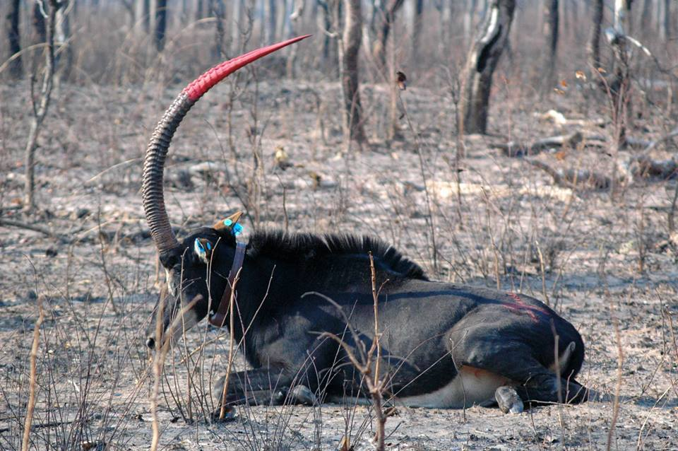
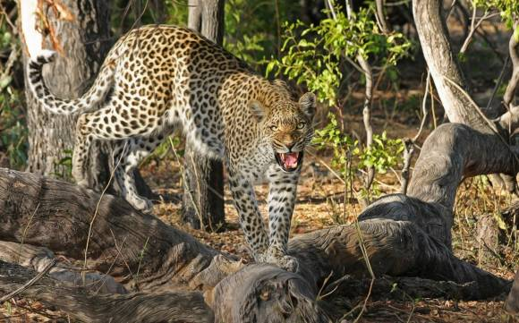

Notícias
Nesta seção dedicada à vida selvagem exuberante de Angola, convidamos você a embarcar em uma jornada inesquecível através do reino animal africano. Prepare-se para mergulhar em histórias incríveis e descobrir a rica biodiversidade que torna Angola um lugar verdadeiramente especial. Nossa equipe de apaixonados por vida selvagem está comprometida em trazer as notícias mais atualizadas e emocionantes sobre a vida animal em Angola. Desde avistamentos raros até pesquisas inovadoras, não há escassez de histórias empolgantes que irão inspirar e cativar sua imaginação.
-
Leões voltam a atacar no Município do Dirico
 Cinco cabeças de gado bovino foram devoradas, sexta-feira, por leões, no município do Dirico, a mais de 700 quilómetros da cidade de Menongue, província do Cuando Cubango. O porta-voz do Serviço de Protecção Civil e Bombeiros no Cuando Cubango, Albano Cutarica, disse, ontem, ao Jornal de Angola, que o primeiro ataque ocorreu no bairro Nutemwangue, a 45 quilómetros da sede municipal do Dirico, nas margens do rio Cubango, onde foram devoradas duas cabeças de gado bovino. Albano Cutarica acrescentou que o outro caso ocorreu na aldeia Machemeno, nas margens do rio Cuito, também a 45 quilómetros da sede municipal do Dirico, onde os leões devoraram três cabeças de gado e os criadores foram obrigados a fugir. No dia 26 de Junho deste ano, recordou, os leões devoraram três bovinos nos bairros Cutunga e Cangongo, a quatro e 35 quilómetros, respectivamente, da sede comunal do Mucusso, assim como duas cabeças, nos bairros Mpango, a 12 quilómetros a leste da sede comunal de Xamavera-Tune. Segundo Albano Cutarica, os ataques de leões no município do Dirico, a mais de 700 quilómetros da cidade de Menongue, estão a preocupar as autoridades administrativas, a população e os criadores de gado, que são aconselhados a se afastarem das áreas de transumância e/ou habitat natural de animais ferozes. Os leões no município do Dirico, explicou, estão a atacar, preferencialmente, cabeças de gado bovino, deixando os criadores fugirem sem serem perseguidos. Na semana passada, fez saber, registou-se, igualmente, no município do Dirico, a destruição de dez hortas por hipopótamos, que correspondem a sete hectares. Habitantes apavorados Habitantes do município do Dirico estão apavorados com os constantes ataques de leões, que estão a se aproximar das residências, principalmente nas comunas do Xamavera-Tune e do Mucusso. O Jornal de Angola apurou que, devido à situação, o governador do Cuando Cubango, José Martins, orientou a criação de uma equipa técnica, que está a trabalhar com as autoridades municipais, comunais e líderes comunitários do Dirico, para se encontrar soluções que visam inverter o quadro. O director do Gabinete Provincial do Ambiente, Gestão de Resíduos e Serviços Comunitários, Júlio Bravo, informou que localidades de Catunga, Gongo, Tchova, Tchiamutué e Mavamba são as mais afectadas por ataques de leões. Sem revelar o número de cabeças de gado já devorado, Júlio Bravo fez saber que no município do Dirico, que dista a cerca de 700 quilómetros da cidade de Menongue, existem muitos leões, hipopótamos e outros animais selvagens, por ser uma área potencialmente rica em termos de recursos faunísticos. Júlio Bravo realçou que por este facto é que se registam, também, muitos casos de ataques de hipopótamos contra pessoas que fazem a travessia do rio Cubango e de devastação de campos de cultivo, sobretudo de culturas de tomate, couve e repolho. "Estes animais são protegidos e não devem ser abatidos, no âmbito do comprometimento do Executivo com países membros do Projecto Transfronteiriço de Conservação Ambiental Okavango/Zambeze (KAZA), nomeadamente o Botswana, Namíbia, Zâmbia e Zimbabwe”, sublinhou. Júlio Bravo acrescentou que se regista a reprodução de muitos animais selvagens na província do Cuando Cubango, com realce às áreas afectas ao projecto KAZA, nos municípios do Cuito Cuanavale, Dirico, Mavinga e Rivungo, devido à paz que se regista, após um longo período de conflito armado no país. Em localidades de Menongue e Cuangar, referiu, a maior preocupação tem a ver com ataques de jacarés, que continuam a vitimar muitas pessoas que frequentam rios para tomar banho, acarretar água, lavar roupa e utensílios de cozinha. O Executivo, explicou, está preocupado com os crimes ambientais, que tendem a crescer, sobretudo a caça furtiva que é um facto na província do Cuando Cubango, onde muitas espécies de animais são abatidas diariamente por caçadores furtivos, assim como a exploração ilegal de recursos florestais. "O Executivo tem estado a ditar regras para que os recursos naturais sejam explorados de forma sustentável”, concluiu. Carlos Paulino e Nicolau Vasco | MenongueLeia mais
Cinco cabeças de gado bovino foram devoradas, sexta-feira, por leões, no município do Dirico, a mais de 700 quilómetros da cidade de Menongue, província do Cuando Cubango. O porta-voz do Serviço de Protecção Civil e Bombeiros no Cuando Cubango, Albano Cutarica, disse, ontem, ao Jornal de Angola, que o primeiro ataque ocorreu no bairro Nutemwangue, a 45 quilómetros da sede municipal do Dirico, nas margens do rio Cubango, onde foram devoradas duas cabeças de gado bovino. Albano Cutarica acrescentou que o outro caso ocorreu na aldeia Machemeno, nas margens do rio Cuito, também a 45 quilómetros da sede municipal do Dirico, onde os leões devoraram três cabeças de gado e os criadores foram obrigados a fugir. No dia 26 de Junho deste ano, recordou, os leões devoraram três bovinos nos bairros Cutunga e Cangongo, a quatro e 35 quilómetros, respectivamente, da sede comunal do Mucusso, assim como duas cabeças, nos bairros Mpango, a 12 quilómetros a leste da sede comunal de Xamavera-Tune. Segundo Albano Cutarica, os ataques de leões no município do Dirico, a mais de 700 quilómetros da cidade de Menongue, estão a preocupar as autoridades administrativas, a população e os criadores de gado, que são aconselhados a se afastarem das áreas de transumância e/ou habitat natural de animais ferozes. Os leões no município do Dirico, explicou, estão a atacar, preferencialmente, cabeças de gado bovino, deixando os criadores fugirem sem serem perseguidos. Na semana passada, fez saber, registou-se, igualmente, no município do Dirico, a destruição de dez hortas por hipopótamos, que correspondem a sete hectares. Habitantes apavorados Habitantes do município do Dirico estão apavorados com os constantes ataques de leões, que estão a se aproximar das residências, principalmente nas comunas do Xamavera-Tune e do Mucusso. O Jornal de Angola apurou que, devido à situação, o governador do Cuando Cubango, José Martins, orientou a criação de uma equipa técnica, que está a trabalhar com as autoridades municipais, comunais e líderes comunitários do Dirico, para se encontrar soluções que visam inverter o quadro. O director do Gabinete Provincial do Ambiente, Gestão de Resíduos e Serviços Comunitários, Júlio Bravo, informou que localidades de Catunga, Gongo, Tchova, Tchiamutué e Mavamba são as mais afectadas por ataques de leões. Sem revelar o número de cabeças de gado já devorado, Júlio Bravo fez saber que no município do Dirico, que dista a cerca de 700 quilómetros da cidade de Menongue, existem muitos leões, hipopótamos e outros animais selvagens, por ser uma área potencialmente rica em termos de recursos faunísticos. Júlio Bravo realçou que por este facto é que se registam, também, muitos casos de ataques de hipopótamos contra pessoas que fazem a travessia do rio Cubango e de devastação de campos de cultivo, sobretudo de culturas de tomate, couve e repolho. "Estes animais são protegidos e não devem ser abatidos, no âmbito do comprometimento do Executivo com países membros do Projecto Transfronteiriço de Conservação Ambiental Okavango/Zambeze (KAZA), nomeadamente o Botswana, Namíbia, Zâmbia e Zimbabwe”, sublinhou. Júlio Bravo acrescentou que se regista a reprodução de muitos animais selvagens na província do Cuando Cubango, com realce às áreas afectas ao projecto KAZA, nos municípios do Cuito Cuanavale, Dirico, Mavinga e Rivungo, devido à paz que se regista, após um longo período de conflito armado no país. Em localidades de Menongue e Cuangar, referiu, a maior preocupação tem a ver com ataques de jacarés, que continuam a vitimar muitas pessoas que frequentam rios para tomar banho, acarretar água, lavar roupa e utensílios de cozinha. O Executivo, explicou, está preocupado com os crimes ambientais, que tendem a crescer, sobretudo a caça furtiva que é um facto na província do Cuando Cubango, onde muitas espécies de animais são abatidas diariamente por caçadores furtivos, assim como a exploração ilegal de recursos florestais. "O Executivo tem estado a ditar regras para que os recursos naturais sejam explorados de forma sustentável”, concluiu. Carlos Paulino e Nicolau Vasco | MenongueLeia mais -
Elefantes matam 11 pessoas e forçam mais de 600 famílias a abandonar áreas de cultivo
Onze cidadãos nacionais morreram, cinco mil hectares de terras cultivadas foram destruídas e 600 famílias abandonaram as suas lavras, desde 2002, devido a invasão de manadas de elefantes nas regiões da Beira-Alta e Caboco, no Cuanza-Norte. Os municípios da Banga, do Ngonguembo e do Golungo Alto são os mais visados pelas madas de elefantes. No município do Golungo Alto, oito pessoas morreram qundfo tentavam reagir às investidas dos elefantes. Quatro das vítimas mortais eram efectivos das Forças Armadas Angolanas destacados no quartel do Nzenza do Itombe. A reportagem do Jornal de Angola percorreu 430 quilómetros, durante quatro dias, para constatar no terreno o drama vivido pelas comunidades camponesas da Banga, Ngonguembo e Golungo Alto, onde os elefantes estão a deixar as matas para recuperar o seu antigo habitat, transformado actualmente em campos agrícolas e zonas habitacionais. As culturas mais devastadas são as de banana, café, manga, batata, amendoim, dendê e mandioca. Em declarações ao Jornal de Angola, a esposa do Soba da região da Beira Alta, município do Golungo Alto, afirma que a situação tornou-se “insustentável”, devido a morte de pessoas e a destruição de campos agrícolas. Zita Agostinho diz haver um sentimento de medo entre os caçadores, que deixaram de ir às matas a caça de animais para o próprio sustento. Para sobreviver, acrescentou, a população, que antes produzia com fartura, dedica-se a venda de múcua (fruto do embondeiro), para obter dinheiro para comprar mandioca, fuba de bombó e outros produtos no mercado do 30, em Luanda. Nos últimos 10 anos, os elefantes destruíram centenas de lavras e deixaram 350 famílias sem alimento na comuna de Cavunga, que dista a 18 quilómetros de Quilombo dos Dembos, sede municipal de Ngonguembo. O regedor da comuna de Cavunga, António Nzagi, referiu que a população da região de Gombe-Anambua teve de abandonar as suas casas e lavras, com medo do gigante mamífero. Outra afectada é a localidade de Songuelo, a três quilómetros da comuna de Cavunga, onde as palmeiras e um tubérculo conhecido por “cocoa”, fizeram com que os elefantes transformassem do local o seu “santuário” predilecto. Segundo o regedor de Cavunga, no passado era difícil ouvir relatos de invasão de lavras por elefantes, que embora fossem avistados na floresta, não provocavam qualquer prejuízo. “Actualmente, a situação é preocupante pelo facto do animal algumas vezes desfilar pela sede comunal, em plena luz do dia, sob o olhar de crianças e idosos”, alertou, acrescentando que na região ainda não houve registo de mortes, mas teme que tarde ou cedo o infortúnio venha a ocorrer.Leia mais -
Autoridades monitoram várias girafas no Luengue
 As vinte e duas girafas reencontradas, em 2017, no Parque Nacional do Luengue-Luiana, província do Cuando Cubango, começam a ser acompanhadas no primeiro semestre deste ano pelo Ministério do Ambiente. O reaparecimento deste animal, em Setembro de 2017, constituiu um dos destaques do sector ambiental em Angola, facto que obrigou a elaboração de um plano estratégico para a sua protecção e conservação. No quadro do seu ressurgimento, Angola beneficiou, em 2017, de um prémio internacional à nível da Associação Africana dos Fiscais. Falando à Angop, o técnico do Ministério do Ambiente Manuel Xavier referiu que o monitoramento da espécie vai contar com o apoio de especialistas internacionais e das Repúblicas da Namíbia e Botswana, regiões em que a espécie se movimenta, saindo de Angola e vice-versa. Para o controlo do seu movimento serão colocadas coleiras às girafas, à semelhança da iniciativa sobre a protecção da palanca negra gigante. A espécie que já consta do Anexo II da Convenção sobre as Espécies Migratórias (CME) é típica da região do Parque Nacional do Luengue-Luiana, criado em 2011, pelo Ministério do Ambiente. A espécie reaparece depois da desmilitarização da zona, o que está a facilitar o repovoamento natural desta zona de conservação com outras espécies de pequeno, médio e grande porte, de acordo com a fonte. Em Angola, antes do reacender dos conflitos, controlavam-se milhares de girafas, com destaque ao Parque Nacional da Mupa, no Cunene, onde actualmente não há vestígios desta espécie, de acordo com Miguel Xavier.Leia mais
As vinte e duas girafas reencontradas, em 2017, no Parque Nacional do Luengue-Luiana, província do Cuando Cubango, começam a ser acompanhadas no primeiro semestre deste ano pelo Ministério do Ambiente. O reaparecimento deste animal, em Setembro de 2017, constituiu um dos destaques do sector ambiental em Angola, facto que obrigou a elaboração de um plano estratégico para a sua protecção e conservação. No quadro do seu ressurgimento, Angola beneficiou, em 2017, de um prémio internacional à nível da Associação Africana dos Fiscais. Falando à Angop, o técnico do Ministério do Ambiente Manuel Xavier referiu que o monitoramento da espécie vai contar com o apoio de especialistas internacionais e das Repúblicas da Namíbia e Botswana, regiões em que a espécie se movimenta, saindo de Angola e vice-versa. Para o controlo do seu movimento serão colocadas coleiras às girafas, à semelhança da iniciativa sobre a protecção da palanca negra gigante. A espécie que já consta do Anexo II da Convenção sobre as Espécies Migratórias (CME) é típica da região do Parque Nacional do Luengue-Luiana, criado em 2011, pelo Ministério do Ambiente. A espécie reaparece depois da desmilitarização da zona, o que está a facilitar o repovoamento natural desta zona de conservação com outras espécies de pequeno, médio e grande porte, de acordo com a fonte. Em Angola, antes do reacender dos conflitos, controlavam-se milhares de girafas, com destaque ao Parque Nacional da Mupa, no Cunene, onde actualmente não há vestígios desta espécie, de acordo com Miguel Xavier.Leia mais -
Manada de hipopótamos devasta lavras em aldeia
Uma manada de hipopótamos destruiu lavras de camponeses,com diversas culturas de milho, feijão, hortícolas, cana-de-açúcar e outros produtos agrícolas, na aldeia de Catala Segunda, município do Londuimbali, disse Martinho José, soba da circunscrição. O grau de destruição das lavouras, apontou a autoridade tradicional, é o mais devastador até ao momento registado na região, um cenário que poderá comprometer a colheita deste ano, agravado pelo facto dos hipopótamos saírem em pleno dia, em algumas ocasiões, das margens do rio, o tem provocado medo no seio dos camponeses. Martinho José lembrou que este não é o primeiro caso, visto que, há três anos, uma manada de hipopótamos deixou um rasto de destruição acentuado na região, mas não num nível elevado como o que se verifica agora, em que a maior parte dos camponeses da aldeia viu toda a produção de milho, feijão, hortícolas, cana-de-açúcar, entre outros produtos destruídos. O soba aproveitou a ocasião para lançar um grito de socorro à Administração Municipal do Londuimbali, de forma a ajudar a solucionar a situação que os populares da Catala Segunda se deparam. “Precisamos de nos livrar dos hipopótamos, para que as populações não morram de fome. Há também, para além destes ataques, peste ‘broca do milho’, que tem prejudicado as lavras”, disse o soba Martinho José. A aldeia Catala Segunda situa-se a 18 quilómetros do município do Londuimbali, na margem do rio Kussangai, cuja população é, maioritariamente, camponesa.Leia mais -
Crescentes ataques de crocodilos amedrontam população junto do rio Cunene
Bengo: Crocodilo mata mãe e filha na Fazenda da Cerâmica Uma jovem, de 19 anos, e a filha, de 9 meses, foram atacadas, no sábado, no rio Lifune, por um crocodilo, na localidade da Cerâmica, a 35 quilómetros da cidade de Caxito, disse uma testemunha do acidente. Ana Margarida disse, ao Jornal de Angola, que tudo aconteceu quando ambas foram buscar água para beber, ouviu gritos e viu a companheira e o bebé, que trazia às costas, serem arrastadas por um enorme crocodilo. “Ela preparava-se para encher a banheira e o bidão quando foi surpreendida pelo crocodilo gigante que as arrastou até às profundezas do rio”, afirmou. Assustada, referiu, correu para casa a contar o que se passara aos vizinhos e à Polícia, que anunciou que os corpos das vítimas tinham sido encontrados, sem graves lesões, dentro de um túnel. Simeão Garcia, soba do Dembo dos Libongos, afirmou que vai pedir uma reunião urgente das autoridades tradicionais da região para se encontrar uma solução para esta situação que preocupa as populações da Fazenda Lifune e da Cerâmica.Leia mais -
País tem perto de 200 Palancas Negras Gigante

Luanda - O secretário de Estado do Ambiente, Joaquim Manuel, disse hoje (quinta-feira), em Luanda, que se estima existirem no país cerca de 200 Palancas Negras Gigantes, mas ainda ameaçadas devido a caça furtiva. O responsável, que falava no workshop de balanço das actividades do Programa de Conservação da Palanca Negra Gigante realizadas em 2018, referiu que não se tem um número exacto, mas estima-se que há uma população a volta de 200 animais no Parque Nacional de Cangandala e na Reserva Integral do Luando, na província de Malanje. Acrescentou que a espécie está ameaçada porque o número que se tem hoje indica que o pico da parabólica não está no meio, mas a descer. Actualmente o crescimento está na ordem dos dez por cento, enquanto o ideal seria 70 por cento para que caso haja alguma catástrofe na zona se possa ter exemplares suficientes para a sua sobrevivência. Joaquim Manuel disse que a caça furtiva continua, tanto a comercial como a de sobrevivência e, não há capacidade de cobrir as áreas a cem por cento com fiscais, porque a nível do país existem apenas mil e seiscentos e precisariam de oito mil para colmatar a situação. Referiu que a caça é mais efectiva na Reserva Integral do Luando em relação ao parque Nacional de Cangandala por serem áreas bastantes vastas onde há falta de fiscais.Leia mais -
Ataque de leopardo deixa dois homens feridos

Dois homens sobreviveram ao ataque de um leopardo que tentavam caçar para impedir a morte de mais cabeças de gado, na localidade de Oshilau, município de Cahama, província do Cunene, anunciou uma autoridade local. O incidente foi relatado pelo administrador municipal adjunto de Cahama, Ediu Sambuaku, e terá ocorrido na passada sexta-feira, tendo os dois indivíduos ficado gravemente feridos. Segundo o administrador, de 28 de Setembro a 2 de Outubro os populares abateram dois leopardos de um grupo de oito felinos, que já mataram 23 cabeças de gado. Ediu Sambuaku, citado pela Angop, disse que já estão no terreno, técnicos do Instituto de Desenvolvimento Florestal para afugentar os animais. De acordo com o responsável do IDF do Cunene, Abel Zamba, a presença dos felinos e outros animais naquela zona verifica-se por se tratar de um local de transumância.Leia mais -
Reserva de búfalos entra em exploração
 O programa de divulgação e exploração da reserva de búfalos na comuna do Cayave, município do Caimbambo, arranca na próxima sexta-feira, em acto a ser presidido pelo governador provincial de Benguela, Isaac dos Anjos, anunciou ontem fonte da administração local à Angop. A circunscrição possui uma reserva de búfalos numa extensão de 400 quilómetros, que compreende as aldeias de Kassenha, Tchilúvia (Cayave) e Câbio, na comuna de Catengue.Leia mais
O programa de divulgação e exploração da reserva de búfalos na comuna do Cayave, município do Caimbambo, arranca na próxima sexta-feira, em acto a ser presidido pelo governador provincial de Benguela, Isaac dos Anjos, anunciou ontem fonte da administração local à Angop. A circunscrição possui uma reserva de búfalos numa extensão de 400 quilómetros, que compreende as aldeias de Kassenha, Tchilúvia (Cayave) e Câbio, na comuna de Catengue.Leia mais